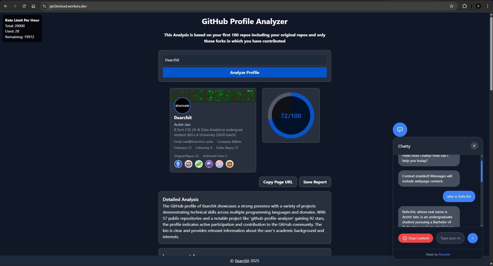
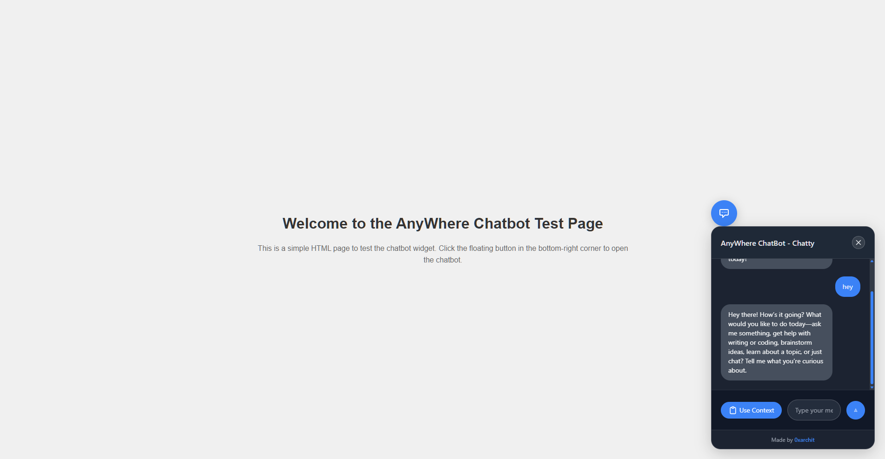

#
AnyWhere Chatbot — Chatty
AnyWhere Chatbot ("Chatty") is a lightweight, drop-in JavaScript widget that adds a floating, context-aware chatbot to any website. The widget is delivered as a single script via Jsdelivr cdn. Chatty supports customizable branding, theme mode, system prompt, and optional page context capture.
Quick Start
Install: Add the script tag to any page near the end of the
body.<script src="https://cdn.jsdelivr.net/gh/0xarchit/AnyWhere-ChatBot-Chatty@1.0.0/chatty.min.js" mode="dark" brandName="AnyWhere ChatBot" systemPrompt="You are testing chatbot for AnyWhere Chatbot created and owned by 0xArchit." context="toggle"></script>
#
Screenshots
Demo 1 — Chatty on GitHub Profile Analyzer tool

Demo 2 — Chatty integrated on my portfolio website

Testing — Local testing page for Chatty

Tip
Quick start: copy the minimal script tag example below and paste it before